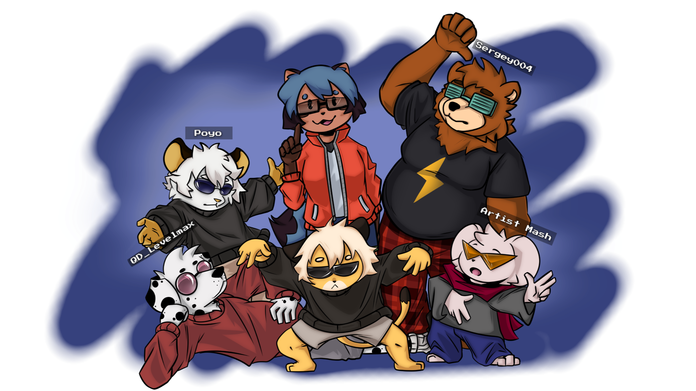

Про мене 🧑💻
Мене звати Нікіта, мені 16 років (день народження — 5 січня), проживаю на західній Україні. Я високий, худий, веселий і трохи сором'язливий, але дуже люблю спілкування — особливо з тими, хто теж в темі фуррі чи ігор.
Чим цікавлюсь ✨
- Програмування та IT
- Техніка — люблю розбирати гаджети
- 3D-моделювання та анімація
- Веду прямі трансляції й веду YouTube (ліниво, але впевнено)
- Граю: Roblox, Minecraft, Fortnite, ZZZ та багато іншого
- VR — Oculus Quest / Meta Quest
- Малювання та створення артів
Мій нікнейм всюди — Nikitoss2ss. Люблю мультиплеєр і знайомства в іграх — шукаю нових фуррі друзів 😺
Мої персонажі 🎭

Чорний кемоно дракончик з червоним животом, крилами і вогником на хвості.
Білий верх, чорні порвані джинси, капелюх самурая та вушками — мій основний образ.
У костюмі червоного дракона — для веселих серверних пригод.
Пісня мого дня 🎧
Подяка ❤️
Дяка для Mikus та Poyo за LoRa і допомогу з генерацією зображень за допомогою ШІ.

Зацікавився? Приєднуйся 🌐
Нікнейм всюди — Nikitoss2ss